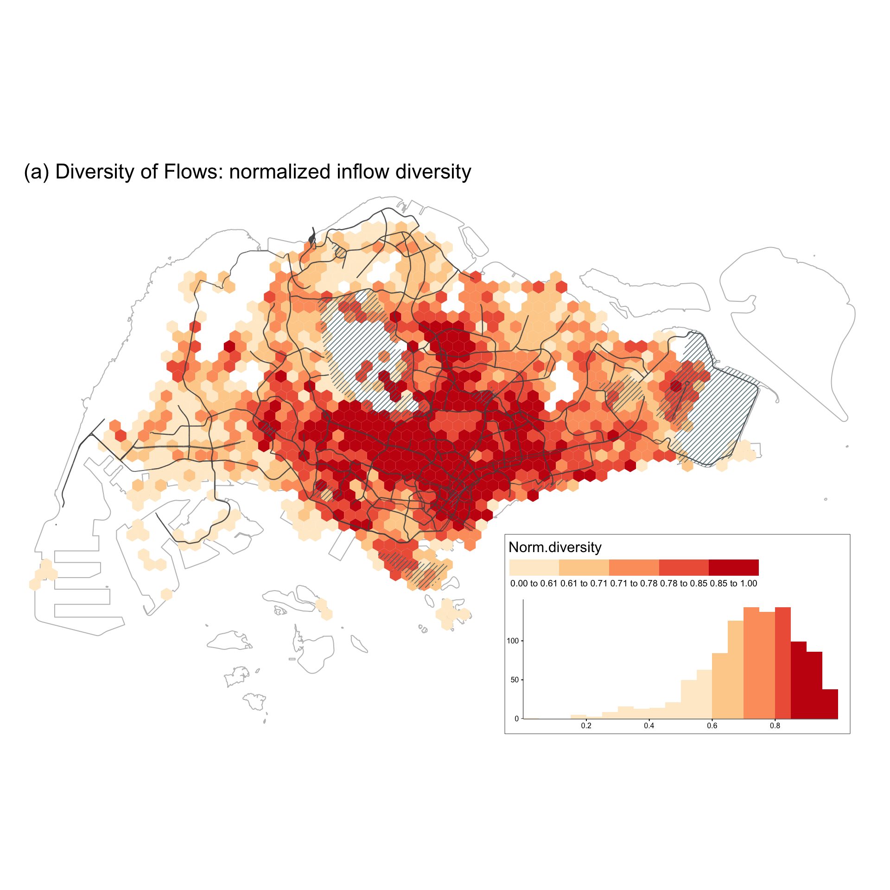
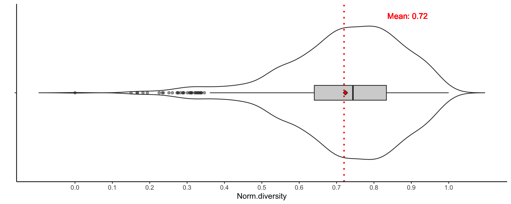
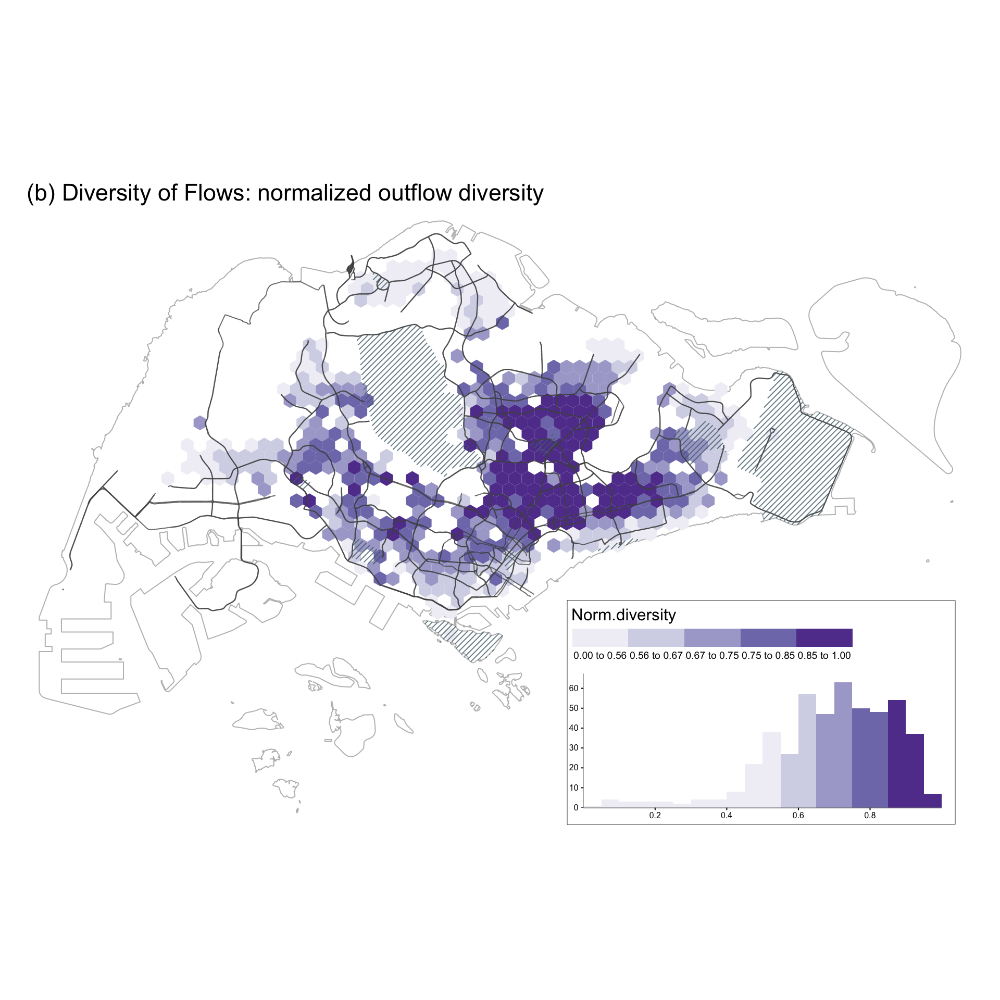
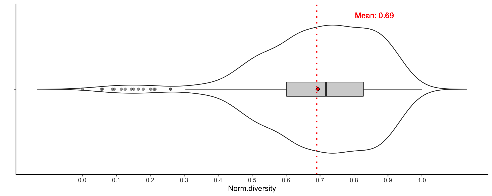

Last updated: 2021-05-25
Checks: 6 1
Knit directory: entangledfootprints/
This reproducible R Markdown analysis was created with workflowr (version 1.6.2). The Checks tab describes the reproducibility checks that were applied when the results were created. The Past versions tab lists the development history.
The R Markdown is untracked by Git. To know which version of the R Markdown file created these results, you’ll want to first commit it to the Git repo. If you’re still working on the analysis, you can ignore this warning. When you’re finished, you can run wflow_publish to commit the R Markdown file and build the HTML.
Great job! The global environment was empty. Objects defined in the global environment can affect the analysis in your R Markdown file in unknown ways. For reproduciblity it’s best to always run the code in an empty environment.
The command set.seed(20210524) was run prior to running the code in the R Markdown file. Setting a seed ensures that any results that rely on randomness, e.g. subsampling or permutations, are reproducible.
Great job! Recording the operating system, R version, and package versions is critical for reproducibility.
Nice! There were no cached chunks for this analysis, so you can be confident that you successfully produced the results during this run.
Great job! Using relative paths to the files within your workflowr project makes it easier to run your code on other machines.
Great! You are using Git for version control. Tracking code development and connecting the code version to the results is critical for reproducibility.
The results in this page were generated with repository version 807c101. See the Past versions tab to see a history of the changes made to the R Markdown and HTML files.
Note that you need to be careful to ensure that all relevant files for the analysis have been committed to Git prior to generating the results (you can use wflow_publish or wflow_git_commit). workflowr only checks the R Markdown file, but you know if there are other scripts or data files that it depends on. Below is the status of the Git repository when the results were generated:
Ignored files:
Ignored: .DS_Store
Ignored: .Rproj.user/
Ignored: data/.DS_Store
Untracked files:
Untracked: analysis/008-social-diversity.Rmd
Untracked: analysis/bibliography.bib
Untracked: code/flow_mapping.R
Untracked: code/viz.R
Untracked: data/data/
Untracked: data/derived_data/
Untracked: data/photos/
Untracked: data/raw_data/
Unstaged changes:
Modified: README.md
Modified: analysis/_site.yml
Modified: analysis/index.Rmd
Deleted: code/README.md
Note that any generated files, e.g. HTML, png, CSS, etc., are not included in this status report because it is ok for generated content to have uncommitted changes.
There are no past versions. Publish this analysis with wflow_publish() to start tracking its development.
To measure diversity, we use Shannon’s diversity index (H) as it is commonly used for species diversity and accounts for both richness and evenness of the species present. The Shannon’s diversity index (H) is calculated as follows: \(H = -\sum_{i=1}^Sp_ilnp_i\)
where S is the number of “species” (i.e., number of sectors in our case) and pi is the proportion of individuals that belong to species i. The higher the Shannon’s index (H) value is, the more diverse the origins of visitors are for inflow diversity. Conversely, for outflow diversity a higher H means that local users visit a more diverse set of locations throughout the city.
One complication arises from using circular sectors rather than actual species for our diversity analysis. The differences in the area of each sector (resulting from the different buffer radii) lead to a higher likelihood of users originating in a larger sector. To circumvent this issue we normalize by area and use the ‘user density’ (i.e., the ratio of users over the sector area within the study area) instead of the ‘number of users’ in \(p_i\) when measuring the diversity.
# aggregated grids
grids <- read_sf(here("data/derived_data/spatial_hex_grid.shp"), quiet = T) %>%
st_transform(crs = 3414)
# Singapore planning areas
sg_subzone <- read_sf(here("data/raw_data/sg-subzone/MP14_SUBZONE_NO_SEA_PL.shp")) %>%
st_transform(crs = 3414) %>%
st_make_valid() %>%
group_by(PLN_AREA_N) %>%
dplyr::summarise()
# grid sectors
grid_sectors <- readRDS(here("data/derived_data/grid_sectors.rds"))
# tweets
df_tweets <- readRDS(here("data/derived_data/deidentified_sg_tweets_updated.rds"))
# qualified grid cells
considered_grids <- df_tweets %>%
group_by(grid_id) %>%
dplyr::summarise(n_tweets = n(), n_users = n_distinct(u_id)) %>%
filter(n_tweets >= 100 & n_users >= 5)
# usrs in each grid cell
users_in_grids <- df_tweets %>% distinct(u_id, grid_id)
# identified home location of users
identified_hms <- read_csv(here("data/derived_data/identified_hms.csv"))
# distinct users in grids: local or visitor
distinct_users <- readRDS(here("data/derived_data/distinct_users.rds"))# function used for diversity analysis
cal_diversity <- function(grid_index, data, grid_sectors, grids, type = "inflow"){
# get sectors of input grid
sectors <- grid_sectors %>% filter(grid_id == grid_index)
# get sector areas intersect with SG boundary
sectors_corssSG <- st_intersection(sectors, sg_subzone) %>%
dplyr::select(-PLN_AREA_N) %>%
unique() %>%
group_by(sector_id, grid_id) %>%
dplyr::summarise() %>%
ungroup()
# assign users to sectors
if(type == "inflow"){
# assign visitors' home locations to sectors
users_in_sectors <- st_join(data, sectors_corssSG, largest = TRUE) %>%
distinct(u_id, home, .keep_all = TRUE) %>%
dplyr::select(sector_id, grid_id, u_id, home) %>%
st_set_geometry(NULL) %>%
left_join(., sectors_corssSG) %>% # change the geometry to sectors' geometry
st_sf() # convert to sf object
}else if(type == "outflow"){
# assign locals visited locations to sectors
users_in_sectors <- st_join(data, sectors_corssSG, largest = T) %>%
distinct(u_id, out_to_grid, .keep_all = TRUE) %>%
dplyr::select(sector_id, grid_id, u_id, out_to_grid) %>%
st_set_geometry(NULL) %>%
left_join(., sectors_corssSG) %>% # change the geometry to sectors' geometry
st_sf()
}
# calculate Shannon's index
output <- users_in_sectors %>%
group_by(sector_id) %>%
dplyr::summarise(n_user = n_distinct(u_id)) %>%
ungroup() %>%
mutate(area_km_square = as.numeric(st_area(.)/1000000)) %>%
mutate(user_density = n_user/area_km_square) %>%
st_set_geometry(NULL) %>%
distinct(sector_id, user_density) %>%
spread(sector_id, user_density) %>%
diversity(index = "shannon")
return(output)
}The inflow diversity is saved under data/derived_data/ directory.
# Get visitors in each grid
visitors_in_grid <- distinct_users %>%
filter(type == "visitor") %>%
left_join(., grids, by = c("home" = "grid_id")) %>%
st_as_sf(crs = 3414) %>%
nest(data = c(u_id, home, type, geometry))
# visited grid
visitors_in_grid[1, ]# A tibble: 1 x 2
grid_id data
<dbl> <list>
1 3 <sf [3 × 4]># visitors with home locations
visitors_in_grid[1, ]$data[[1]]Simple feature collection with 3 features and 3 fields
geometry type: POLYGON
dimension: XY
bbox: xmin: 18042.54 ymin: 36100.32 xmax: 40917.54 ymax: 42162.5
projected CRS: SVY21 / Singapore TM
# A tibble: 3 x 4
u_id home type geometry
<dbl> <dbl> <chr> <POLYGON [m]>
1 82965004 1594 visit… ((40542.54 36749.84, 40167.54 36966.34, 40167.54 37399.…
2 90218329 626 visit… ((18417.54 36100.32, 18042.54 36316.82, 18042.54 36749.…
3 49010226 1461 visit… ((35667.54 41296.47, 35292.54 41512.98, 35292.54 41945.…# calculate diversity
if(file.exists(here("data/derived_data/inflow_diversity.rds"))){
inflow_diversity <- readRDS(here("data/derived_data/inflow_diversity.rds"))
}else{
inflow_diversity <- visitors_in_grid %>%
filter(grid_id %in% considered_grids$grid_id) %>%
mutate(div_shannon = map2_dbl(grid_id, data, with_progress(function(x, y) cal_diversity(x, y, grid_sectors, grids, type = "inflow")))) %>%
dplyr::select(-data)
inflow_diversity <- inflow_diversity %>%
mutate(norm_div_shannon = (div_shannon - min(div_shannon))/(max(div_shannon) - min(div_shannon))) %>%
left_join(., grids, by = c("grid_id" = "grid_id")) %>%
st_sf(crs = 3414)
saveRDS(inflow_diversity, file = here("data/derived_data/inflow_diversity.rds"))
}
head(inflow_diversity)Simple feature collection with 6 features and 3 fields
geometry type: POLYGON
dimension: XY
bbox: xmin: 2292.538 ymin: 24408.98 xmax: 7917.538 ymax: 35017.79
projected CRS: SVY21 / Singapore TM
# A tibble: 6 x 4
grid_id div_shannon norm_div_shannon geometry
<dbl> <dbl> <dbl> <POLYGON [m]>
1 3 0.691 0.166 ((2667.538 24408.98, 2292.538 24625.48, …
2 8 1.00 0.289 ((3042.538 25058.49, 2667.538 25275, 266…
3 14 1.01 0.291 ((3417.538 25708.01, 3042.538 25924.52, …
4 19 0.693 0.167 ((3792.538 25058.49, 3417.538 25275, 341…
5 123 1.36 0.430 ((7167.538 33502.24, 6792.538 33718.75, …
6 135 1.51 0.488 ((7542.538 34151.76, 7167.538 34368.27, …The grids except home that each local visited are saved under data/derived_data/ directory.
# Get other grids except home that locals visited
# locals in home grids
locals_in_grid <- distinct_users %>%
filter(type == "local") %>%
nest(data = c(u_id, home, type))
# grids outside home grid that each local visited
get_locals_out_grids <- function(grid_id, data, users_in_grids, grids){
# locals in home grid
locals <- data$u_id %>% unique()
# home grid id
locals_home <- grid_id
output <- users_in_grids %>%
filter(u_id %in% locals) %>% ## get grids that locals sent tweets
filter(!grid_id %in% locals_home) %>% ## remove grid that is the same as the home
left_join(., grids) %>% ## get out to grid geometry
rename(out_to_grid = grid_id) %>%
st_sf()
return(output)
}
if(file.exists(here("data/derived_data/locals_out_grids.rds"))){
locals_out_grids <- readRDS(here("data/derived_data/locals_out_grids.rds"))
}else{
locals_out_grids <- locals_in_grid %>%
filter(grid_id %in% considered_grids$grid_id) %>%
mutate(data = map2(grid_id, data, with_progress(function(x, y) get_locals_out_grids(x, y, users_in_grids, grids))))
saveRDS(locals_out_grids, file = here("data/derived_data/locals_out_grids.rds"))
}
# home grid
locals_out_grids[1, ]# A tibble: 1 x 2
grid_id data
<dbl> <list>
1 234 <sf [923 × 3]># locals in home grid with their visited grids outside home
locals_out_grids[1, ]$data[[1]]Simple feature collection with 923 features and 2 fields
geometry type: POLYGON
dimension: XY
bbox: xmin: 7917.538 ymin: 24408.98 xmax: 46167.54 ymax: 48657.69
projected CRS: SVY21 / Singapore TM
# A tibble: 923 x 3
u_id out_to_grid geometry
<dbl> <dbl> <POLYGON [m]>
1 81473111 613 ((18042.54 39347.91, 17667.54 39564.42, 17667.54 39997.…
2 81473111 1187 ((29292.54 28955.61, 28917.54 29172.11, 28917.54 29605.…
3 81473111 1210 ((29667.54 30904.17, 29292.54 31120.67, 29292.54 31553.…
4 81473111 1216 ((29667.54 38698.39, 29292.54 38914.9, 29292.54 39347.9…
5 81473111 579 ((17292.54 39347.91, 16917.54 39564.42, 16917.54 39997.…
6 81473111 1233 ((30042.54 31553.68, 29667.54 31770.19, 29667.54 32203.…
7 81473111 1271 ((30792.54 30254.65, 30417.54 30471.15, 30417.54 30904.…
8 81473111 715 ((20292.54 31553.68, 19917.54 31770.19, 19917.54 32203.…
9 81473111 1125 ((28167.54 30904.17, 27792.54 31120.67, 27792.54 31553.…
10 81473111 1709 ((45417.54 37399.36, 45042.54 37615.86, 45042.54 38048.…
# … with 913 more rowsThe outflow diversity is saved under data/derived_data/ directory.
# calculate outflow diversity
if(file.exists(here("data/derived_data/outflow_diversity.rds"))){
outflow_diversity <- readRDS(here("data/derived_data/outflow_diversity.rds"))
}else{
outflow_diversity <- locals_out_grids %>%
filter(grid_id %in% considered_grids$grid_id) %>%
mutate(div_shannon = map2_dbl(grid_id, data, with_progress(function(x, y) cal_diversity(x, y, grid_sectors, grids, type = "outflow")))) %>%
dplyr::select(-data)
outflow_diversity <- outflow_diversity %>%
mutate(norm_div_shannon = (div_shannon - min(div_shannon))/(max(div_shannon) - min(div_shannon)),
norm_div_shannon = round(norm_div_shannon, 2)) %>%
left_join(., grids, by = c("grid_id" = "grid_id")) %>%
st_sf(crs = 3414)
saveRDS(outflow_diversity, file = here("data/derived_data/outflow_diversity.rds"))
}
head(outflow_diversity)Simple feature collection with 6 features and 3 fields
geometry type: POLYGON
dimension: XY
bbox: xmin: 9792.538 ymin: 34801.28 xmax: 12417.54 ymax: 38914.9
projected CRS: SVY21 / Singapore TM
# A tibble: 6 x 4
grid_id div_shannon norm_div_shannon geometry
<dbl> <dbl> <dbl> <POLYGON [m]>
1 234 2.15 0.367 ((10167.54 34801.28, 9792.538 35017.79, …
2 286 2.24 0.469 ((11292.54 35450.8, 10917.54 35667.31, 1…
3 287 1.99 0.179 ((11292.54 36749.84, 10917.54 36966.34, …
4 304 2.06 0.260 ((11667.54 36100.32, 11292.54 36316.82, …
5 321 2.27 0.508 ((12042.54 35450.8, 11667.54 35667.31, 1…
6 323 2.45 0.712 ((12042.54 38048.88, 11667.54 38265.38, …spatial_viz(inflow_diversity, fill_var = "norm_div_shannon",
legend_title = "Norm.diversity",
main_title = "(a) Diversity of Flows: normalized inflow diversity",
main.title_size = 1.4,
legend.hist_height = 0.25, legend.hist_width = 0.5,
legend_width = 0.4, legend.hist_size = 0.5,
legend.title_size = 1.2, legend.text_size = 0.65)
[1] "#FEEBCF" "#FDD099" "#FC9F6A" "#EE6246" "#C81C12"violin_viz(inflow_diversity, var = "norm_div_shannon",
labs.x = "", labs.y = "Norm.diversity", breaks = seq(0, 1, 0.1),
y.shift = 0.17, x.shift = 1.52, text.size = 4)
spatial_viz(outflow_diversity, fill_var = "norm_div_shannon",
legend_title = "Norm.diversity",
main_title = "(b) Diversity of Flows: normalized outflow diversity",
main.title_size = 1.4,
legend.hist_height = 0.25, legend.hist_width = 0.5,
legend_width = 0.4, legend.hist_size = 0.5,
legend.title_size = 1.2, legend.text_size = 0.65,
palette = "Purples")
[1] "#F1EFF6" "#D5D5E8" "#AAA8D0" "#7F7BB9" "#61409B"violin_viz(outflow_diversity, var = "norm_div_shannon",
labs.x = "", labs.y = "Norm.diversity", breaks = seq(0, 1, 0.1),
y.shift = 0.17, x.shift = 1.52, text.size = 4)
sessionInfo()R version 4.0.4 (2021-02-15)
Platform: x86_64-apple-darwin17.0 (64-bit)
Running under: macOS Big Sur 10.16
Matrix products: default
BLAS: /Library/Frameworks/R.framework/Versions/4.0/Resources/lib/libRblas.dylib
LAPACK: /Library/Frameworks/R.framework/Versions/4.0/Resources/lib/libRlapack.dylib
locale:
[1] en_US.UTF-8/en_US.UTF-8/en_US.UTF-8/C/en_US.UTF-8/en_US.UTF-8
attached base packages:
[1] stats graphics grDevices utils datasets methods base
other attached packages:
[1] here_1.0.1 purrrogress_0.1.1 vegan_2.5-7 lattice_0.20-41
[5] permute_0.9-5 RColorBrewer_1.1-2 tmap_3.3-1 sf_0.9-7
[9] forcats_0.5.1 stringr_1.4.0 dplyr_1.0.5 purrr_0.3.4
[13] readr_1.4.0 tidyr_1.1.3 tibble_3.1.0 ggplot2_3.3.3
[17] tidyverse_1.3.0
loaded via a namespace (and not attached):
[1] nlme_3.1-152 fs_1.5.0 lubridate_1.7.10
[4] httr_1.4.2 rprojroot_2.0.2 tools_4.0.4
[7] backports_1.2.1 bslib_0.2.4 utf8_1.1.4
[10] R6_2.5.0 KernSmooth_2.23-18 mgcv_1.8-33
[13] DBI_1.1.1 colorspace_2.0-0 raster_3.4-5
[16] withr_2.4.1 sp_1.4-5 tidyselect_1.1.0
[19] leaflet_2.0.4.1 compiler_4.0.4 git2r_0.28.0
[22] leafem_0.1.3 cli_2.3.1 rvest_0.3.6
[25] testextra_0.1.0.9000 xml2_1.3.2 sass_0.3.1
[28] scales_1.1.1 classInt_0.4-3 digest_0.6.27
[31] rmarkdown_2.7 base64enc_0.1-3 dichromat_2.0-0
[34] pkgconfig_2.0.3 htmltools_0.5.1.1 highr_0.8
[37] dbplyr_2.1.0 htmlwidgets_1.5.3 rlang_0.4.10
[40] readxl_1.3.1 rstudioapi_0.13 farver_2.1.0
[43] jquerylib_0.1.3 generics_0.1.0 jsonlite_1.7.2
[46] crosstalk_1.1.1 magrittr_2.0.1 Matrix_1.3-2
[49] Rcpp_1.0.6 munsell_0.5.0 fansi_0.4.2
[52] abind_1.4-5 lifecycle_1.0.0 stringi_1.5.3
[55] leafsync_0.1.0 yaml_2.2.1 MASS_7.3-53
[58] tmaptools_3.1-1 grid_4.0.4 parallel_4.0.4
[61] promises_1.2.0.1 crayon_1.4.1 splines_4.0.4
[64] stars_0.5-1 haven_2.3.1 hms_1.0.0
[67] knitr_1.31 pillar_1.5.1 codetools_0.2-18
[70] reprex_1.0.0 XML_3.99-0.5 glue_1.4.2
[73] evaluate_0.14 modelr_0.1.8 vctrs_0.3.6
[76] png_0.1-7 httpuv_1.5.5 testthat_3.0.2
[79] pkgcond_0.1.0 cellranger_1.1.0 gtable_0.3.0
[82] postlogic_0.1.0.1 assertthat_0.2.1 xfun_0.21
[85] lwgeom_0.2-5 broom_0.7.5 e1071_1.7-4
[88] later_1.1.0.1 class_7.3-18 viridisLite_0.3.0
[91] cluster_2.1.0 workflowr_1.6.2 units_0.6-7
[94] ellipsis_0.3.1 parsetools_0.1.3